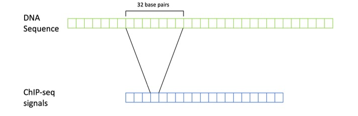
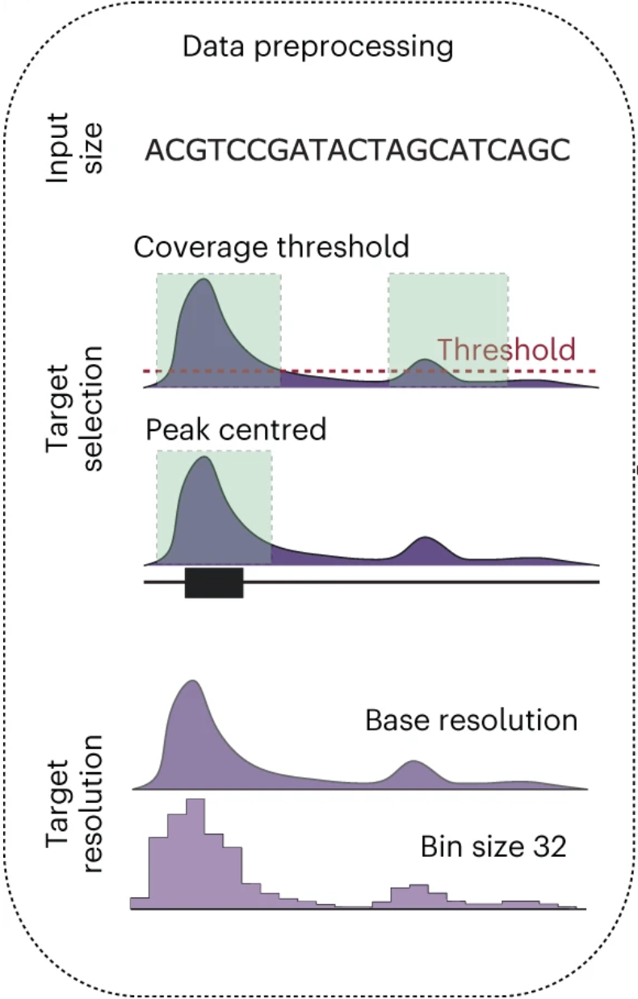
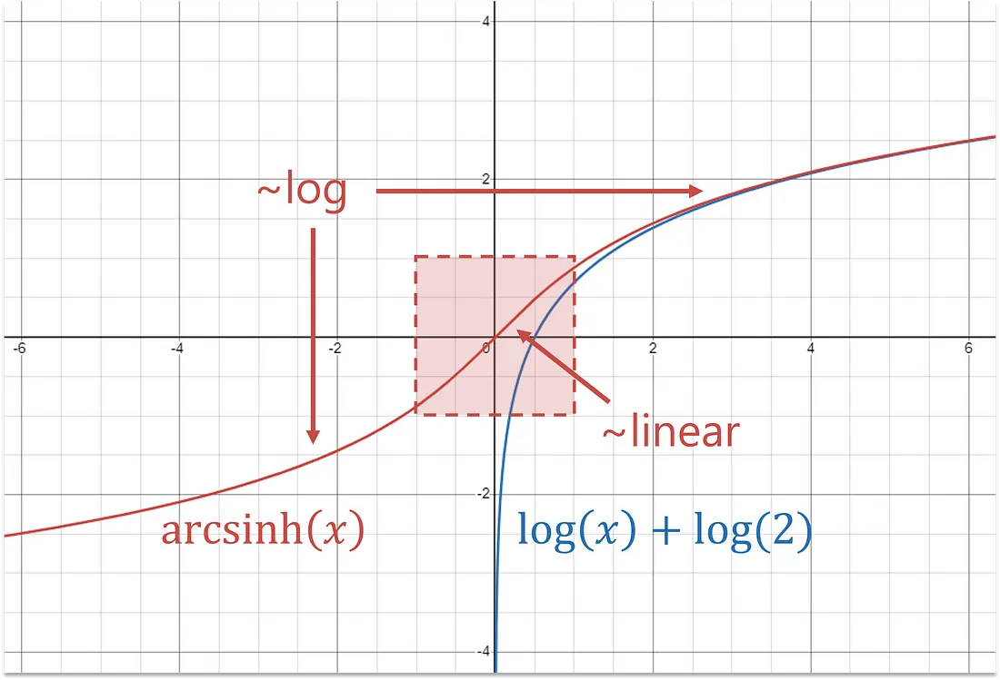

2 Pre-processing of bigWig files
In Machine Learning tasks, data used to train models are usually sourced from downstream analysis such as p-values and fold change data for several reasons. These include being aligned to a reference genome, and being of higher quality due to the peak calling process. However, sequencing errors and noise can still be present. When using -log10 p-value and fold change data, base pair averaging is commonly used to further reduce this noise by changing the resolution of the data through aggregation. This is additionally done to prepare the data for the window/region size we intend to examine and predict.18 Figure showing a 32 base pair resolution following base pair averaging of ChIP-Seq data19
By applying base pair averaging over a window (e.g. 32bp), you might see that while individual counts vary, there is a broader region where the average read coverage is consistently high, indicating a potential region of interest. The intended effect of base pair averaging is further reducing noise, signal smoothing as well as reducing computational costs due to binning. You generally do not want to predict at a base pair level as there is not much biological relevance to one base pair as opposed to a region (peaks, binding sites, open chromatin regions etc).

Figure showing some data preprocessing choices in training convolutional neural networks to predict peaks.20
An important point to introduce regarding the input size / input window / input sequence length is this is the genomic ‘context’ your model will use to make predictions. For example, a model trained on an input window of 2048bp could be used to predict the centre 32bp (output window) at a 32bp resolution (prediction resolution). This prediction will be based on the genomic information the model learns from the 2048bp region. Some current models like Basenji and Enformer have input windows in the kbps with prediction resolutions as small as 128bp21. The motivation being that the model has a larger ‘context’ in which to learn distal effects/relationships to make predictions. However, the receptive fields of these models need to be large in order to capture these effects. Enformer utilises transformer architecture, while Basenji uses dilated convolutional layers to boost their receptive fields. As you will see in the tutorials, you can re-average your data to a higher base pair average before using it in machine learning models. This can be implemented to decrease dimensionality, reduce computational intensity and tailor the model to understanding regions of a certain scale.
2.0.1 Transformations to stop extreme p-values
When utilising genomic data which incorporates p-values, it is important to consider and deal with extreme p-values. One way this is done is through using an Arcsinh-transformation (inverse hyperbolic sine).
\(\text{arcsinh}(x) = \ln \left( x + \sqrt{x^2 + 1} \right)\)
The arcsinh-transformation as a logarithmic function helps in reducing the significance of outliers and sequencing errors while maintaining variance by compressing the range of the data. This transformation can be used in the data preprocessing stage. The graph below visualises how the transformation works. While extreme values are transformed logarithmically, the smaller values are barely transformed as the function for smaller values is more linear in nature.

Plot of Arcsinh Transformation compared to a log function, made with Desmos. Source
{kind=link}
In the genomic context, beware of normalising using sample statistics such as the mean or standard deviation, before splitting your data to avoid leaky preprocessing effects. The arcsinh function does not depend on sample statistics in normalising the data.
BigWig files containing signal p-value or fold change data can be quite tricky to deal with. However, libraries such as pyBigWig enable easier access of data. In order to understand how to handle the data pre-processing stage, I have created a jupyter notebook tutorial on Google Colab. The tutorial begins using UCSC’s programs to quickly understand the genomic data within BigWigs, before using the pyBigWig library to simply extract BigWig data.
The final part of the tutorial uses the pyBigWig library to load, filter, and split BigWig data into training, validation, and test sets. The data consists of signal p-values from ChIP-seq experiments, processed using the MACS2 tool. We will re-average these signals to a resolution of 32 base pairs. Additionally, we will implement threshold-based filtering and consistent data splits to understand how to ready data for a model.
Tutorial 1: Loading and Pre-Processsing Data from bigWigs (interactive)
Tutorial 1: Loading and Pre-Processsing Data from bigWigs (nbviewer)
2.1 Data loaders and simplifying pre-processing
Data loaders are scripts/functions to load batches of data into your model. They are crucial in machine learning because they simplify how data is fed into models, making the whole process smoother and more efficient. This becomes especially important with the large datasets used in genomic studies, where managing and processing data manually would be cumbersome. By automating these tasks, data loaders help ensure that data is processed efficiently, allowing for faster and more effective model training. While there are existing github repositories with genomic data loaders, such as “Kipoi Dataloader”, and “Dataloader for BigWig files”.22 Depending on the data used and model you build, they won’t cover all of the use cases. When building one yourself, the PyTorch library has its own dataset and dataloader modules, which include creating custom datasets.